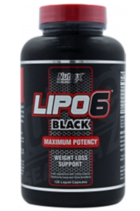
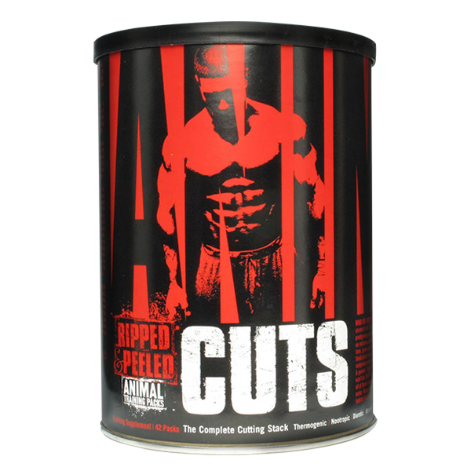
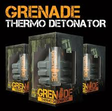
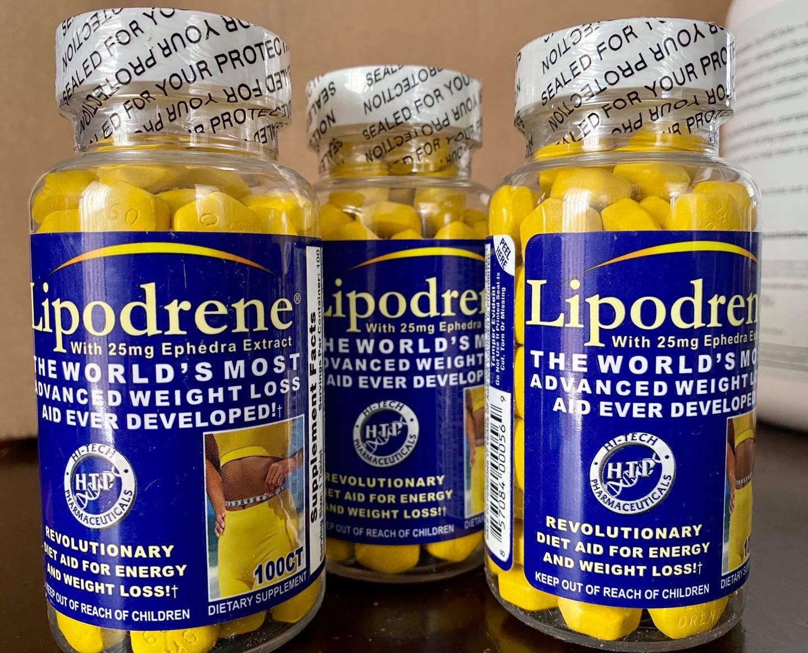
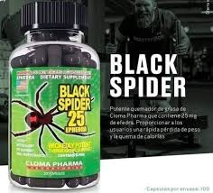

El hecho de que todo esto realmente sea así es beneficioso para la persona que quiere eliminar la grasa acumulada en ciertas zonas del cuerpo y suele hacerlo a partir de la toma de suplementos termogénicos. Algunos de estos suplementos más populares están fabricados a partir de sustancias naturales que originan esa termogénesis. Por ejemplo, el café verde o cafeína, el té verde, la L-carnitina o el guaraná, entre otros.
Térmogenicos
5 Térmogenicos mas vendidos

Lipo 6 Black, de la marca Nutrex, es el termogénico más vendido en Europa.
Su función es limpiar y reprogramar los receptores adrenérgicos para hacerlos más susceptibles a nuevos estímulos y gestionarlos con un complejo quema-grasa.

Hydroxycut Elite, de la marca Muscletech, es un “súper termogénico” y es el más vendido en Estados Unidos.
Promete actuar en 4 puntos que considera importantes: termogénesis, aumento de energía, concentración mental y pérdida de peso.

Animal Cuts, de la marca Universal, se presenta como un suplemento inflexible, diseñado para producir resultados de nivel profesional.
Además, tiene efectos diuréticos y actúa sobre la liberación de grasas almacenadas y las hormonas tiroideas; ya que éstas controlan directamente el metabolismo.

Grenade Thermo Detonator, de la marca Grenade, promete conseguir un metabolismo más energético.
Este termogénico te ofrece aún más energía física y mental, ideal para mejorar tu entrenamiento.

Lipodrene Objetivos de grasa en las aéreas mas obstinadas tales como: abs, caderas, muslos y glúteos.
Esta avanzada tecnología de quemador de grasa es una combinación de hierbas naturales y lipotrópicos
especialmente patentados como un sistema de quema de grasa de 3 vías,

Black Spider 25, con su impresionante mezcla de propiedad que se mezcla para bajar de peso y quema de grasa.
Los beneficios clave: Aumento de los niveles de energía, pérdida de grasa impresionante, pre Entrenamiento estimulante, pérdida de peso rápida
Lipo 6 Black, de la marca Nutrex, es el termogénico más vendido en Europa. Su función es limpiar y reprogramar los receptores adrenérgicos para hacerlos más susceptibles a nuevos estímulos y gestionarlos con un complejo quema-grasa.
Hydroxycut Elite, de la marca Muscletech, es un “súper termogénico” y es el más vendido en Estados Unidos. Promete actuar en 4 puntos que considera importantes: termogénesis, aumento de energía, concentración mental y pérdida de peso.
Animal Cuts, de la marca Universal, se presenta como un suplemento inflexible, diseñado para producir resultados de nivel profesional. Además, tiene efectos diuréticos y actúa sobre la liberación de grasas almacenadas y las hormonas tiroideas; ya que éstas controlan directamente el metabolismo.
Grenade Thermo Detonator, de la marca Grenade, promete conseguir un metabolismo más energético. Este termogénico te ofrece aún más energía física y mental, ideal para mejorar tu entrenamiento.
Lipodrene Objetivos de grasa en las aéreas mas obstinadas tales como: abs, caderas, muslos y glúteos. Esta avanzada tecnología de quemador de grasa es una combinación de hierbas naturales y lipotrópicos especialmente patentados como un sistema de quema de grasa de 3 vías,
Black Spider 25, con su impresionante mezcla de propiedad que se mezcla para bajar de peso y quema de grasa. Los beneficios clave: Aumento de los niveles de energía, pérdida de grasa impresionante, pre Entrenamiento estimulante, pérdida de peso rápida

Correo
Muscleshop@gmail.com
Whatsapp
9611111111